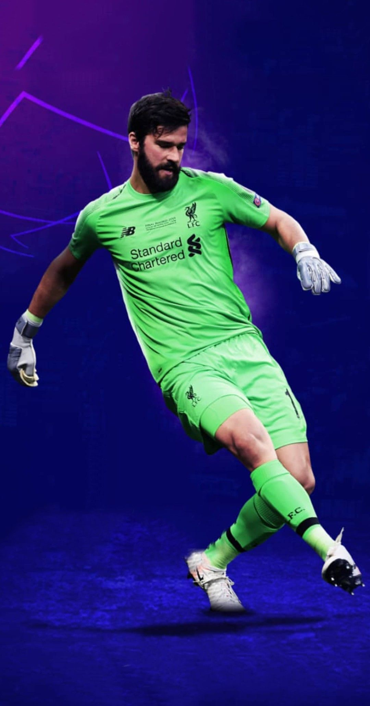
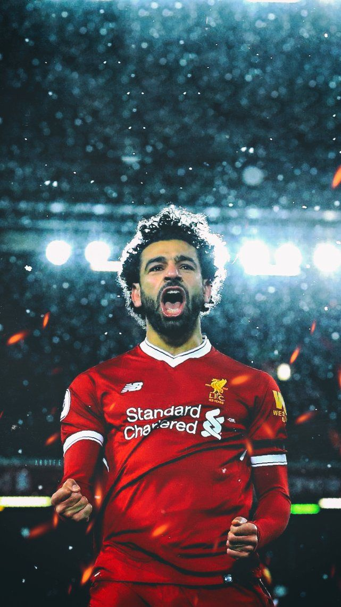

| |
现役核心人物 |
|  |
阿利松
| 1992年10月2日出生于巴西。阿利松出道于巴西国际足球俱乐部青训，2013年2月首次代表一线队出场。2013年至2016年，阿利松连续四年随队赢得Campeonato Gaucho州冠军。2016年7月，阿利松加盟意甲罗马足球俱乐部。2017-18赛季成为主力门将，帮助球队闯入欧冠四强，个人荣膺意甲赛季最佳门将，并入选意甲与欧冠的赛季最佳阵容。2018年7月，阿利松以7250万欧元的身价加盟英超利物浦足球俱乐部，打破世界足坛门将转会费纪录。在利物浦，他迅速成为球队的关键球员，多次帮助球队赢得重要赛事的冠军，包括欧洲冠军联赛、英超联赛、欧洲超级杯、世界俱乐部杯等。他的出色表现也让他个人赢得了多项荣誉，如英超金手套奖、雅辛奖等。 |
|
|  |
1992年6月15日出生于埃及，萨拉赫出道于埃及国内联赛。2012年，萨拉赫转会至瑞士的巴塞尔足球俱乐部，开始了欧洲足球的征程。2014年1月，萨拉赫转会至英超切尔西足球俱乐部，但并未获得太多出场机会。2014年7月，萨拉赫租借加盟意甲佛罗伦萨足球俱乐部，并在那里逐渐崭露头角。2015年7月，萨拉赫转会至意甲罗马足球俱乐部，成为球队的主力前锋，并帮助球队在意甲和欧战中取得佳绩。2017年7月，萨拉赫以高价转会至英超利物浦足球俱乐部，并迅速成为球队的核心球员之一。他在利物浦的表现极为出色，多次帮助球队赢得重要赛事的冠军，并个人荣膺多项荣誉。萨拉赫是一名技术精湛、速度极快、突破能力极强的边锋。他在场上的跑动积极，善于寻找空当和制造威胁。 |
 |
1991年7月8日出生于荷兰布雷达，荷兰职业足球运动员，司职中后卫，绰号“世一卫”。现效力于英格兰足球超级联赛的利物浦足球俱乐部。范戴克出身于荷兰足球甲级联赛的阿贾克斯足球俱乐部青训营。2013年2月，范戴克转会至苏格兰足球超级联赛的凯尔特人足球俱乐部。2015年7月，范戴克转会至英格兰足球超级联赛的南安普顿足球俱乐部。2017年12月，范戴克以7500万英镑的转会费加盟利物浦足球俱乐部，双方签约五年半。2019年，范戴克当选PFA英超年度最佳球员，同时也力压梅西和C罗，荣膺欧洲足球最佳球员（2018~2019赛季）。 |